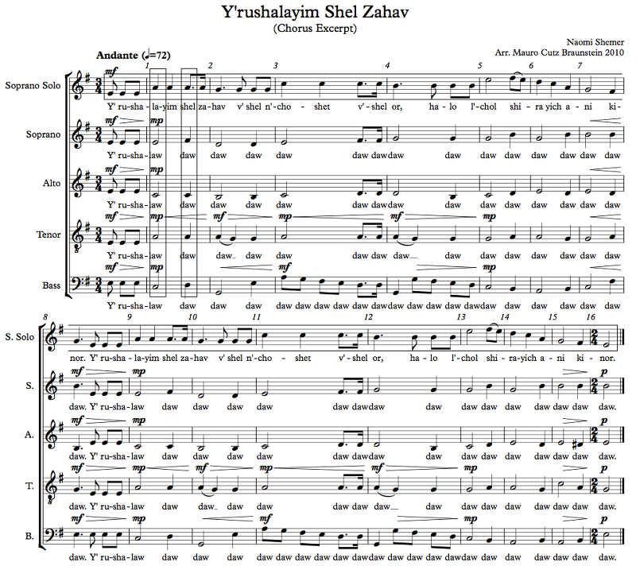

A chord is just a bunch of notes sounded at the same time. A harmony is... kind of a feeling, I guess? It's the effect of a bunch of notes sounded at the same time, but those notes don't actually have to sound at the same time. Harmony can be implied by a melody, for example. We'll talk about that. When we talk about harmony in general, we mean the general notion of the effects of multiple notes sounded at the same time. I can say "this harmony is C7", referring to a specific chord feeling, or "this piece has tertian harmony", referring to the fact that this piece has chords built by thirds. "Harmony" can also refer to an accompaniment line that's just playing chords with the main melody, as in "I'll sing melody; you should sing harmony". We're not going to talk about this use of the word very much.
Remember how we started at the very beginning, back in Chapter 1?
When you read, you begin with?
Except that I'm taking the opposite trick now. When you read, you begin with A, B, C. Despite my earlier statement that we weren't going to do that — and, in a horizontal sense, we didn't — in a vertical sense, we did.
Look at the example below, which is taken from my a cappella arrangement of Naomi Shemer's Y'rushalayim Shel Zahav (some info on Wikipedia):
Example 6.1
The horizontal box in the solo part is the melody. We've already talked quite a bit about that. For example, you probably noticed right away that there's a very clear motif here: up a fourth, down a step, up a fourth, down a step, etc. From the pickups to measure 1 until measure 2, we have three eighth notes on a low note, some quarter notes on the note a fourth higher, and a resolution down a step. Then the same thing happens again in measures 3 and 4. When it happens again at 5, the climax of the phrase, it resolves differently, but still down a step; the resolution just keeps going further down — but not to the tonic. That has to wait until the repetition of the phrase, which is exactly the same other than the last note, which is indeed the tonic. By the way, if you read the Wikipedia article I linked above, Naomi Shemer was apparently inspired by a Basque lullaby for the verses. It's a very pretty melody!
We've talked a lot about that, though. This chapter is when we finally turn to talking about the other boxes: the vertical boxes in the first measure. In that first box, we have the bass on C, tenor on A, alto on C, soprano on E, and solo on A. These notes form an A minor chord. In the next box, we have bass on D, tenor on A, alto on C, soprano on F#, and solo on A. These notes, on the other hand, form a D7 chord. The horizontal aspect of the music is generally known as melody, and the vertical aspect is generally known as harmony.
The real melody is in the solo. But the other parts have their own melodies too! They're not particularly interesting, though. For example, the tenor part consists entirely of A's and G's (except for the "Y'rusha" pickups and the first note at 15). It's not entirely boring because of the appoggiaturas, but it's not really something with a melodic contour worth discussing. When you're listening to this excerpt, you're not paying attention to the tenor part, most likely. But that doesn't mean that interesting melodic moments don't happen. The bass part here is a great example; it has these descending eighth notes that drive the music forward and compete for attention with the solo. This kind of thing is known as a countermelody.
Harmony, and in general writing for many voices, is a puzzle. At every step, you have to balance the horizontal needs of the music with the vertical needs. Do the chords work with the melodies? Do the chords work with each other? Do the melodies work with each other? Harmony is the study of the chords working with each other horizontally; the study of melodies working with each other vertically is called counterpoint. And here's the thing: chords are built of melodies. Many lines of music, many melodies, come together to form each chord. We're going to study chords in relative isolation, but let's never forget that an isolated chord is an abstract representation of the verticalness that happens in real music as a consequence of its horizontalness.
To actually answer your question — why did it take so long to get here? — we need to consider the horizontal and vertical senses separately. In the horizontal sense, we started right in with melodies. We learned about notes that were part of melodies; we learned about rhythms that were part of melodies; we learned about scale degrees that were part of melodies. Think of a melody as a story, and we started by telling stories and talking about what makes the story tick. Harmony, though, is a different story. The notes are like letters; when we started at the very beginning, we started learning harmony from our ABC's. In the last chapter, in our study of intervals, we learned how to pronounce syllables. We learned about silent E's, about English's weird GH's and how P plus H makes F and not P and H (except for Aeron Greyjoy's nickname, which is not "dam-phair" but "damp-hair", because his hair is damp from seawater). Now we're going to put those syllables together and make words. When we get to harmonic function, which we'll touch on in this chapter, we will learn the parts of speech that those words can have. The language of melody is a simple one that any child can understand. The language of harmony, on the other hand, is a unique heritage of the West, and it's not so simple!
It's actually quite easy to grasp the basics. So let's get to it!